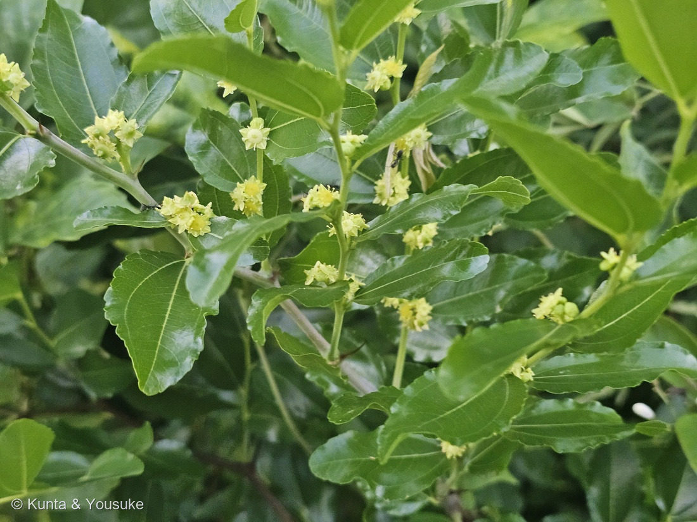
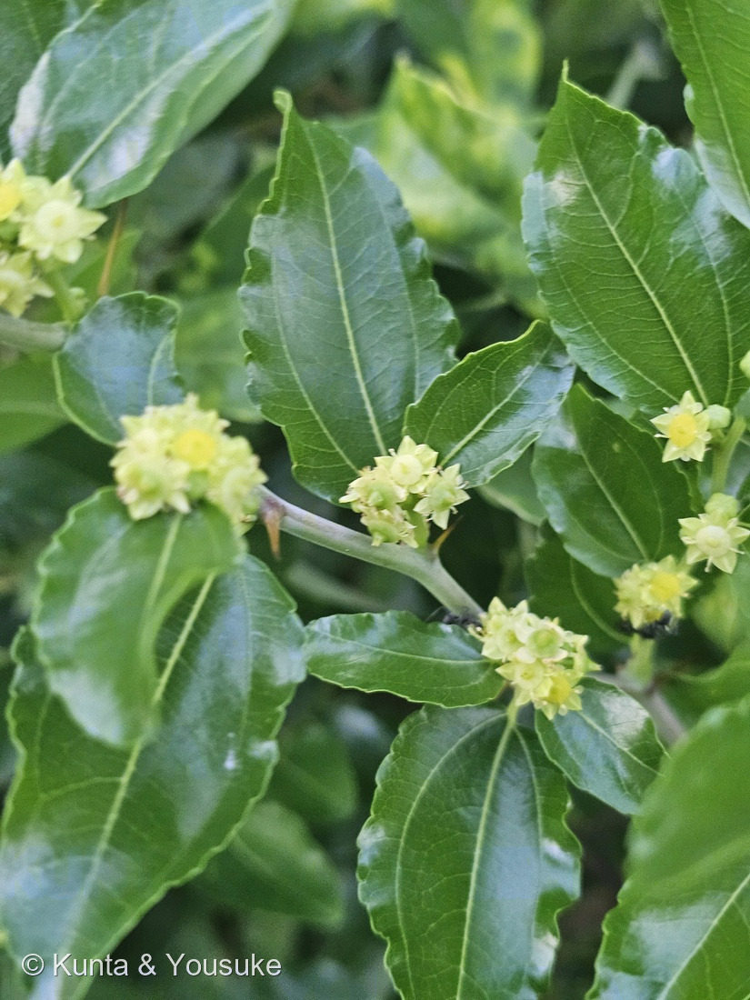
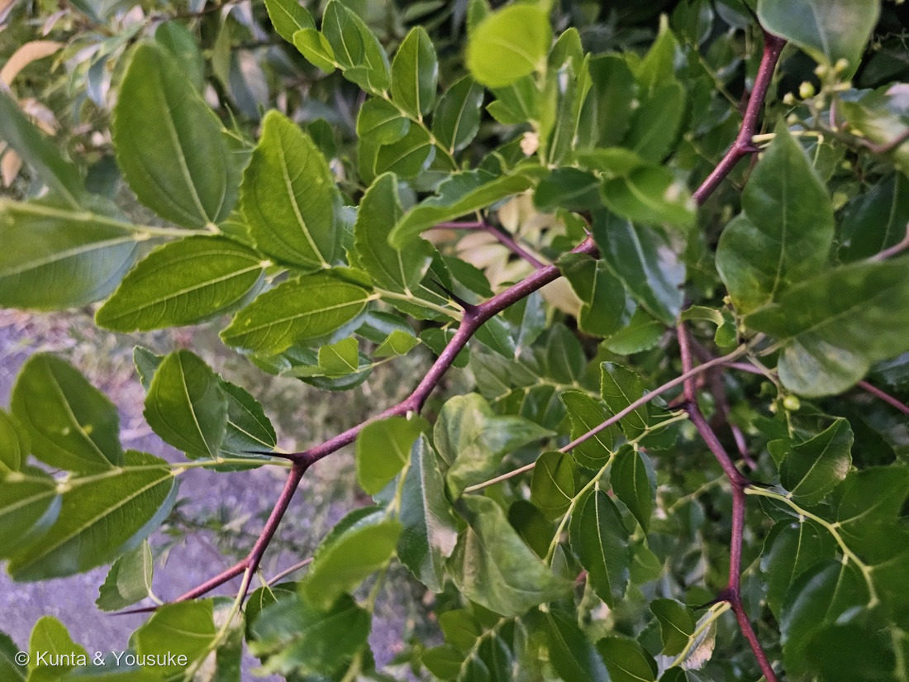
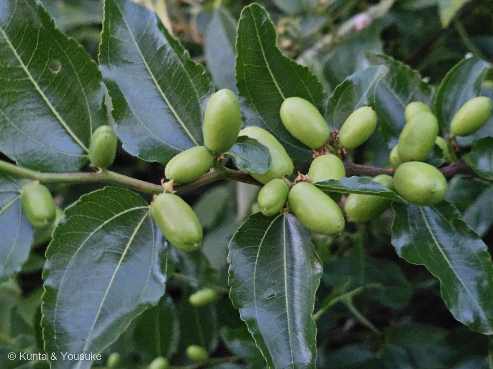

地図を読み込んでいるよ…
🔍 写真も地図も、押しているあいだ拡大して見られるよ（スマホは指を置いてすこし待ってね）。
🌍 の地図＝この子がもともと自生している場所を緑に。⚠出典で食い違う。三河の植物観察は「中国原産」、Wikipediaは「南ヨーロッパ原産、中国・西アジアへ伝わり」とする。⭐日本への渡来は奈良時代以前で、6世紀後半の遺跡から果実の核が出土している。
⚠⚠ふるさとが出典で食い違っているんだ。三河の植物観察は「中国原産」とし、Wikipediaは「南ヨーロッパ原産、中国・西アジアへ伝わり」とする。⭐だから、直接読めて共通している「中国」だけを塗った——⚠南ヨーロッパは塗っていない（177 ホオズキ・176 ミョウガと同じ、決めきれないときのやり方だよ）。⭐⭐そして、この地図でいちばん大事なのは「日本が緑じゃないこと」——⚠日本のナツメは、ぜんぶ人が運んできた子の子孫なんだ。⭐⭐⭐でも、それがとても古い＝渡来は奈良時代以前で、6世紀後半の遺跡から果実の核が出土している（Wikipedia）。⭐1400年以上前から、この国の人はナツメの実を食べていたということだね。⭐写真の木は、よそのおうちの庭木だよ。
⚠ 地図は国（日本と中国だけ県・省）までしか塗れないから、ほんとうの分布より広く見えていることがあるよ。地図はだいたいの場所。正確なところは、上の文を見てね。
ナツメ（棗）
Ziziphus jujuba Mill.
生薬「大棗（たいそう）」／英名 jujube・Chinese date
クロウメモドキ科 · Rhamnaceae（ナツメ属）── 図鑑で初めての科＝83科目
燻太さんの一言「目立たないじみだけど、かわいい星形の花」──5mmしかないのに、ちゃんと星なんだ
名前と学名の由来 ── 夏に、芽が出る
- ⭐⭐和名ナツメ＝「夏芽」。「夏に入って芽が出ること（夏芽）に由来」（Wikipedia）。⭐春に芽吹かず、夏になってからやっと葉を出す——名前が、この木の遅い春を言っている。
- 漢字は「棗」。⭐「朿（とげ）」を縦に二つ重ねた字だよ。⭐⭐この木のいちばんの特徴が、そのまま字になっている（写真②③のトゲを見てね）。
- Ziziphus（ジジフス）＝ナツメ属の属名。jujuba＝英名 jujube と同じ語。
- ⭐乾かした果実は、生薬「大棗（たいそう）」（Wikipedia）。⭐漢方の処方にとてもよく入る、身近な生薬だよ。
この植物のこと
- クロウメモドキ科ナツメ属の落葉小高木。⭐⭐この図鑑で初めてのクロウメモドキ科＝83科目だよ。
- ⭐だから、おまけも同じ科から選んだ。——ケンポナシ（玄圃梨・Hovenia dulcis）。⭐⭐この木のふしぎなところは、食べるのが「実」ではなくて、実の下のふくらんだ軸のほうだということ。⭐ナツメは実そのものが甘くなり、ケンポナシは実を支える柄が甘くなる——⭐⭐同じ科のなかで、甘くなる場所がちがう。⏳見つけたら、そこを見てみてね。
- 高さは2〜6m（三河）／5mほど（Wikipedia）。
- ⭐⭐葉が、落葉樹にしては珍しく強い光沢をもつ（Wikipedia）。⭐写真でも、夕方の光をつやつや返しているのが分かる。
- 葉は長さ3〜7cm、幅1.5〜4cmの卵形〜卵状楕円形、ふちは不揃いな鈍鋸歯（三河）。
- 花は直径5〜6mm、両性、黄緑色、5数性。⭐花弁は萼片の間につき、小さく、倒卵形。花盤は円形、厚い肉質、5裂（三河）。⭐写真②の、星形のまん中で光っている黄色いものが、その花盤だよ。
- 花期は6月（三河・Wikipedia）。⚠でもこの写真は8月6日。——⭐この図鑑には「花期を同定の根拠にしない」という決まりがある（075 アマドコロ）ので、ここは記録として書いておくだけにするね。⏳なぜずれているのかは宿題。
- 果実は長さ2〜3.5cmの卵形で、緑色〜橙褐色に熟し、のち赤色〜暗赤色になる。果期は9〜11月（三河）。
- ⭐日本への渡来は奈良時代以前で、⭐⭐6世紀後半の遺跡から果実の核が出土している（Wikipedia）。⚠原産地は出典で食い違う（三河「中国原産」／Wikipedia「南ヨーロッパ原産、中国・西アジアへ伝わり」）。
同定について ── 決め手が、6つそろった
⭐ この子は、迷いようがないくらい特徴がはっきりしていたよ。
- ⭐⭐⭐①葉の基部から3本の主脈が出る（三行脈）。三河も「3脈が目立つ」、Wikipediaも「3本の葉脈が目立つ」と書いている。⭐写真①②③のどの葉でも、はっきり読める。
- ⭐⭐⭐②節に、鋭いトゲ。⭐托葉が変化したもので、Wikipediaは「枝は棘が対生する」とする。⭐写真③の、黒っぽくまっすぐな針が、それ。
- ⭐⭐③枝が「之」の字にジグザグ。⭐写真③の赤紫の枝が、節ごとに向きを変えているのが見える。
- ⭐④葉が枝に2列にならぶので、⭐⭐枝ごと1枚の羽状複葉のように見える。——⚠でもこれは複葉じゃなくて、単葉が並んでいるだけ。
- ⭐⑤花が直径5〜6mmの黄緑色で5数性、中心に厚い肉質の花盤。
- ⭐⑥葉に、落葉樹には珍しい強い光沢。
⭐⭐⭐ サネブトナツメを落としたのは、燻太さんの記憶だった。
⚠ ひとつだけ、引っかかったことがある。三河のナツメの記載には「托葉状刺(stiplar spin)がない」と書いてある。⚠ところが、この木にははっきりトゲがある。
⭐ これは、野生型の サネブトナツメ（Ziziphus jujuba var. spinosa） を落としきれない、ということだった（栽培されるナツメには、トゲの無い品種＝var. inermis が多い）。
⭐⭐⭐ そこを決めたのは、写真ではなくて、燻太さんの記憶。
「以前、同じ場所でナツメの果実がなっていた」──⭐その実は、2〜3cm・ウズラの卵くらいの大きさだった。
⭐ サネブトナツメの果実は1cm前後で、核（たね）が大きいのが名前の由来（「核太ナツメ」）。⭐⭐2〜3cmなら、ふつうのナツメ。——サネブトナツメは、落ちた。
⭐⭐ 088 イキシアで決めた「現場を見た人は一次資料」が、また効いた。⚠しかも今回は「今日の現場」ですらなくて、「前に見たときの記憶」だった。
⭐⭐⭐ 果実を先に見て、花にあとで会った
燻太さんは、こう言った。
「以前、同じ場所でナツメの果実がなっていたけど、その時は果実しかみていなかった。今日立ち寄ってみたら、目立たないじみだけどかわいい星形の花が咲いていたから、思わず写真に納めたよ。」
⭐⭐ これ、この図鑑ではめずらしい順番なんだ。
ふつうは「花を見つけて、実を待つ」。——055 イチジクも、138 ゴーヤも、178 センニンソウもそうだった。
⭐⭐⭐ でもこの子は、実を先に見て、花にあとで会った。——時間をさかのぼる形の再会。
⭐ そして燻太さんは、もう次を宣言している。
「言わずもがな、次は果実の写真を撮らないとね。」
⏳ 果期は9〜11月。緑から橙褐色、そして暗赤色へ。⭐そのときこのページは、ぐるりと一周して閉じるよ。
⭐⭐⭐⭐⭐ 【2026-08-29 追記】その約束は、20日で果たされた。——燻太さんが2026-08-26に、緑の果実を撮ってきてくれたよ。⭐くわしくは、下の「約束の果実」の節へ。⏳色づくのは、まだこれから。
⭐ 「目立たないじみだけどかわいい」花のこと
⭐ 燻太さんのこの言い方が、ぼくはとても好きだった。
直径5〜6mm。⭐指の爪の、半分もない。⭐遠くから見たら、ただの葉っぱの枝にしか見えない。
⚠ でも近づくと、ちゃんと星の形をしている。——⭐5枚に開いた萼片が星で、その間に小さな花弁がはさまり、まん中に黄色い花盤が皿のように光っている。
⭐⭐ 蜜を出すのは、この花盤。⭐小さくて地味な花ほど、蜜の皿を大きく開けて見せている——⚠ただし「この花にどんな虫が来るか」は確かめられていないので、そこは書かないでおくね。⏳次に行ったら、花の上に虫がいるか見てみて。
⭐⭐⭐⭐⭐ 2026-08-29 追記 ── 約束の果実（写真④）
⭐⭐⭐⭐⭐ 2026-08-06、燻太さんはこう宣言した。「言わずもがな、次は果実の写真を撮らないとね。」
⭐⭐⭐ そして2026-08-26 18:54:43、ほんとうに撮ってきてくれた。——20日後だよ。⭐⭐しかも時刻がほとんど同じ＝花＝18:57〜19:16／実＝18:54＝⭐同じ、夕方の散歩の時間だった。
燻太さんの言葉「ナツメの果実が大きくなってきているよ。まだ緑色だけど、小指ぐらいのサイズ感。形は殻を剥いたピーナッツみたいだね。」
⭐⭐⭐⭐ 「ピーナッツみたい」を、数字にしてみた。——⭐出典（三河の植物観察）＝「核果は長さ2〜3.5cm、幅1.5〜2cmの卵型」＝ここから出る長さ:幅は 1.0〜2.3、まんなかで約 1.6。
⭐⭐ 写真の実を色で切り出して、12個の長さと幅を測ったら、長さ:幅の中央値は 1.82だった。——⭐⭐⭐出典の範囲の上寄り＝細長いほう。⭐殻をむいたピーナッツの実も、だいたい 1.5〜2:1。⭐⭐燻太さんのたとえは、数字で見ても合っていたよ。
⚠ ただし、絶対の大きさは測れていない。——定規が写っていないから、比しか出せないんだ。⭐でも燻太さんの「小指ぐらい」＝おおよそ2〜2.5cmは、出典の「長さ2〜3.5cm」とちゃんと合っている。⏳次は定規をそえて撮ってもらえると、熟すまでの大きさの変化まで追えるよ。
⭐⭐⭐⭐⭐ 8月6日と8月26日で、ちがっていたこと。——⭐8/6の写真①＝緑色の若い枝に花がびっしり。実はまだ見あたらない。／⭐8/26の写真④＝紫褐色の木質化した枝に、2cm前後の実がずらり。
⚠⚠ だから「20日で花が実になった」とは言えない。——枝の色も太さもちがうので、この実は、もっと早い時期に別の枝で咲いた花から来たのだと思う。⭐⭐ナツメは開花の期間が長いので、同じ木に「これから咲く花」と「もう大きくなった実」が同時にある＝⭐それなら、8/6に花・8/26に大きな実で、ちゃんとつじつまが合うよ。
⭐⭐ 写真④をよく見ると、実のつけねに茶色くちぢれたものがくっついている。——これが咲き終わった花の残りだよ。⭐写真②で見た、あの星形の花のなれの果て。⭐⭐花と実が、1枚のなかでつながって見えるんだ。
⏳⭐⭐ そして、まだ緑＝果期の手前。——出典の果期は9〜11月＝「緑色〜橙褐色に熟し、中皮が甘酸っぱく、後に赤色〜暗赤色になる」。⭐この写真は色づく直前だね。⭐⭐9月に入ったら、また会いに行こう。
⭐⭐⭐⭐ そして、トゲの宿題が一歩進んだ。——三河の植物観察を読み直したら、ナツメ本体の説明には「枝に托葉状刺(stiplar spin)がない」と書いてあった。⚠でもこの子には、写真①の左の枝にはっきりトゲがある。
⭐⭐ 三河は、変種を分けて書いている。——ヤマナツメ var. jujuba＝「枝に托葉状刺が2個あり、1個は鉤状で短く、1個は長い」／サネブトナツメ var. spinosa＝「枝が直立し、曲がりくねらず、刺がある」（⭐ちなみに枝が斜上し、曲がりくねり、刺がないものは form. tortuosa）。
⭐⭐⭐ だから、種は Ziziphus jujuba のままで動かないけれど、変種のレベルでは「トゲのある型」らしい。——⏳宿題の「トゲが長短2本セットか確かめる」は、こういう意味だったんだ＝節に短い鉤形が1本＋長いのが1本そろっていれば、ヤマナツメ寄り。⚠写真④にはトゲが写っていないので、まだ決められない。⭐次に会うとき、節のトゲを1つ、寄って撮ってきてもらえると決まるよ。
参考：三河の植物観察・ナツメ（クロウメモドキ科ナツメ属／落葉小高木2〜6m／葉は卵形〜卵状楕円形で3脈が目立つ・不揃いな鈍鋸歯縁／花は直径5〜6mm・黄緑色・5数性・花弁は萼片の間・花盤は円形で厚い肉質で5裂／花期6月／果実2〜3.5cm・果期9〜11月／中国原産・渡来は奈良時代以前）／ナツメ - Wikipedia（和名は「夏芽」に由来／枝は棘が対生する／葉は落葉樹ではめずらしく強い光沢があり3本の葉脈が目立つ／6世紀後半の遺跡から核が出土／生薬「大棗」） ⭐【2026-08-29 追記の出典】三河の植物観察「ナツメ Ziziphus jujuba」（核果は長さ2〜3.5cm、幅1.5〜2cmの卵型、1核が入り、緑色〜橙褐色に熟し、中皮が甘酸っぱく、後に赤色〜暗赤色になる／果期9〜11月／葉身は長さ3〜7cm、幅1.5〜4cmの卵形〜卵状楕円形／基部から3脈があり、基部はわずかに非対称／⚠若枝は紫赤色〜灰褐色、1年枝は緑色、垂れ下がり、枝に托葉状刺(stiplar spin)がない／⭐変種ヤマナツメ var. jujuba＝「枝に托葉状刺が2個あり、1個は鉤状で短く、1個は長い」／⭐変種サネブトナツメ var. spinosa＝「枝が直立し、曲がりくねらず、刺がある」／枝が斜上し、曲がりくねり、刺がないものは form. tortuosa）。⭐撮影時刻は、燻太さんの原本のEXIFから読んだよ（⚠公開画像はEXIFを落としてある）。